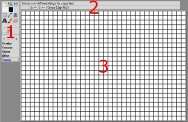
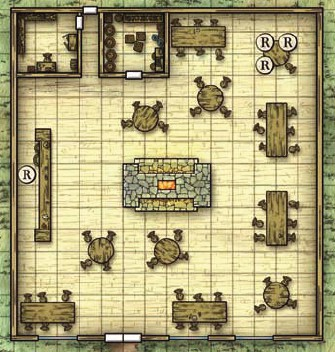
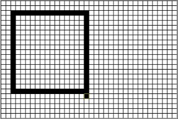
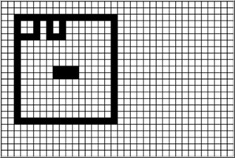
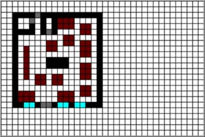

Tutorial for Sheepy's Arena
Introduction
Sheepy's Arena is an online text-based map editor, specifically tailored for HTML and IRC maps.
It is primary designed for roleplaying / strategy games, such as D&D, that are played through forum or IRC.
To play with it, point your up to date browser to http://www.goddessfantasy.com/~sheepy/arena/.
It has the following features:
- Free: No Ad, cost nothing.
- Easy: Use similiar tools with photo editors such as Photoshop or GIMP.
- Layers: Useful for managing your map - espcially battle map.
- Persistent: You can save and load map, and can export map in Plain Text, HTML, BBCode, mIRC, or JSON format.
The main screen is separated into three areas:

- Toolbox
- Status area
- Map area
If the blank map doesn't load automatically, try refresh.
If the map never loads, or if you have problem drawing, please upgrade browser to IE 9, Firefox 3.6, Chrome 6, or equivent level.
We will start by doing a tactical map in a Dungeons & Dragons campaign.
The adventure we are using says that the battle would take place in a pub, and gives the following map:
- 工具箱
- 狀態區
- 地圖區
如果沒有自動載入空白地圖，請刷新。
如果地圖總是不載入，或繪畫時出現問題，請升級瀏覽器到 IE 9, 火狐 3.6, Chrome 6, 或等同瀏覽器.
一開始，我們會給一場龍與地下城的戰役繪制戰術地圖。
我們採用的冒險說戰鬥會在酒吧進行，並給出以下地圖：

Because of the limitation of text, we cannot 100% recreate the map.
But we can do our best. Let's put down the outter walls first, which is a 15 squares x 14 squares rectangle.
After a map is opened, you will be wielding the Brush tool and black colour.
This is a simple tool: If you move your cursor over the map, the cell under the cursor would be highlighted.
This is the cell that would be painted if you click or hold your left mouse button.
So, starting from a cell in top-left corner, click and hold, drag horizontally or vertically for a black line.
You may make mistakes, it is ok. Keep drawing until you get a rectangle:
由於文字的限制，我們不能完美的重現這地圖。
不過我們可以盡力。讓我們首先畫出外牆吧，那是個 15格 x 14格 的長方型。
當一幅地圖被載入後，你使用的繪圖工具會是色刷工具，顏色是黑色。
這是個簡單的工具：如果你在地圖上移動你的鼠標，鼠標下的格子會亮起。
如果你按下或壓住滑鼠左鍵，這格就會被繪上顏色。
於是，從左上方選一格壓住左滑鼠鍵，平移或直移畫出一條黑色線。
不小心畫錯的話也沒有問題，先繼續畫出一個方框：

In the above example the last line overshot a bit.
The eraser tool can be used to erase the unwanted part.
Click on the  Eraser tool in tool box, or press E, and click or drag on the parts you want to erase.
Eraser tool in tool box, or press E, and click or drag on the parts you want to erase.
After you are done, click the  Brush tool (B) to continue drawing.
Fill in inner walls.
Brush tool (B) to continue drawing.
Fill in inner walls.
在上面的範例中，最後一條線多畫了一點。
我們可以用像皮檫工具去擦走不想要的部分。
點選工具箱裡的像皮檫工具，或按 E 鍵，然後點擊或拖拉你想擦走的部分。
事成後點選色刷工具 (B 鍵) 繼續繪畫，填入內牆。

The skeleton is comming out, but to continue we need more colour.
Move the cursor to the black square in toolbox. A colour pattle would comes out.
Clicking on a colour would set it as the colour you are painting with.
Fill in tables, windows, doors, and other fixed features.
Pressing the number key associated with a colour can switch you to that colour.
開始成型了，但繼續下去的話我們需要更多顏色。
將鼠標移到工具箱的黑色方塊。一塊色板會跑出來。
點擊顏色可以把它設定成你在用來繪畫的顏色。
填入桌子，窗戶，門口，和其他固定特徵。
按下顏色上面的數字會將你切換到那隻顏色。

Well done! Time to save up the hard work.
Click the  Save command, type a name in the dialog, and click 'Save'.
Save command, type a name in the dialog, and click 'Save'.
Currently the saved maps are stored locally.
This means you don't need to be online to save and load map.
However, if you clear offline data from your browser, that would includes your maps.
You can restore the above map by importing this data:
做得好！是時候儲存起辛勞的成果。
點擊 儲存指令，在對話盒中輸入名字，然後點擊"儲存"。
目前，儲存的地圖會存在本機。
這代表了你不需要在線都可以儲存和讀取地圖。
可是，如果你清除瀏覽器的離線資料的話，你的地圖可能會被一拼清除。
你可以載入以下資料重現以上地圖：
{"id":"sheepy.arena.20101025.json-zip-base64","data":"w61aXXfCojAQw71LwoDDrcOuw7HDkWJFchTCj8K4JcKQN0LDrBJMw5BdVMOAX8K/QcK7WsObw71yGzzCqHnDomQgQ8Ouwp3DicOMEGZawoJlw6A/bMOsZMKBwqclWAVQZ3YywqdfYC/Ct8K7wo90YMKCVghdLTTDrU/Dg03CkMOZPGYhJHNSwo3Ck8KxGMKDODDClmnDhMObOsOmYzpKM0osw6/CrsK6b8KvRsKdwq/Cpi3CnkHDq8KIe8KHZ8Kowp0MwrvCncOcwqY5DXgvCQ1Sw6LClsK3QsOVHMOqWMOuLMKow55LcQvDjMKQD8K6w5gow5bDhMK3D8OzUk3DqMOUw6PDiFjCsmoOw5TCq3ERT8KhV0bCpRjCtzLCinlvwokmQh9zWcKUwoI4woR3wpVOI8O0wp1Fw4ALwoFxwqFFwqnDh8KELEHCsMOIwrbDs8KMex1becKGUy/Dg2bCgV/Crisiw64Pw7oHXDt5ThFvwpcIHsOWw75Tw74ew5MwF8OrwqbDj8KTw6LCs8Kdwrpsw5oXHMOww53Cu8OeccKzwpfCv8Ohw7UVdmEnDcO5wrEmMMOsw5ZmAi7CuGLCqAXDlgTDnsOPXsOJaQDCncOvB8O5wpzDmsKbTj40QcK7CXjDhsKaw5PCvSY8w5dmH8KFwqdmPMKewpbCvcKJOVLDsMOJwotbTnfCrA0rw55lw4bDgMOGw4RTJ8KRw6EPwoEMfzDCjsK4wrHCjnxCHl/CjcO3wrdafETDucObw5/DvE3Cji4pw5zDiMOzS8KdDHrDi8Kjw73CpMOyw5gvw7A0wobCm33CrsKRH8KTLHkxT8OqHsKWw4jCvT/CqcOle8Olw7fDucOoDzLClU9rw7PDncKrwozDl8ONw5tTwo3Di8Kxw6fDsDfCmcO+cGvDscOgwrZqIMKZdj0xwrcowps1w5Rmw6p8w6fCv8OqwqfDhsOXfsO1w4VddTZZw69ZworCim8qJ8OdwpzDjcOUw5nDmsKFw5fDphfDtl3CrsO8w600f8K7w4gaw6gjw7lAw63CszPDl3RSwrnCqnsfwqjDv0nDqn9SY8K4wqrCu3ZWw7taw73Cv8Ocw6J7RMOWw4fDvcOtw4Fyw6kVw7XCsQkdw6NSw5lHw6E5w6/DmcKXw6/DqVtMw7t+w5nCmcOHEcO3ElLDtcOtwqZoERnCjGLDq8KJwo5Swrckw7BJwqzDh2HDmCrCtsO9w4LCvsK/XcODwqFnw5gAw58QdMK0wqrCr8KXcMK2CSHDiCrCncKkD3Q0EXwYwoLCl8O+wpDCjsOYwpJsOcOgw7cxwoZCNwVdwoE9Jn3CrxTDj8Kfw77DnhZiUcOVw7/Du09zdcOyLDDDvwA="}